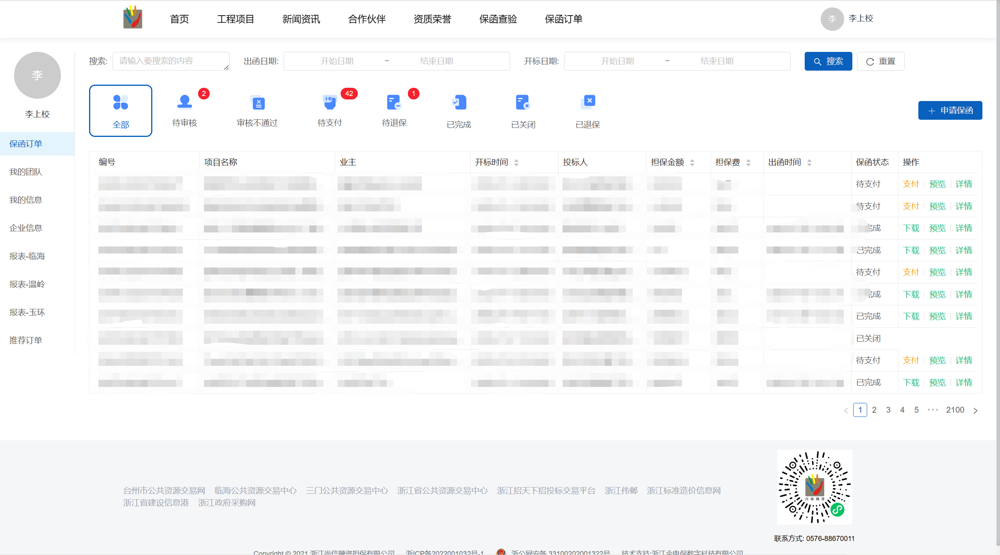
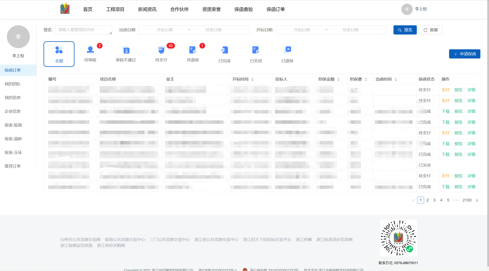
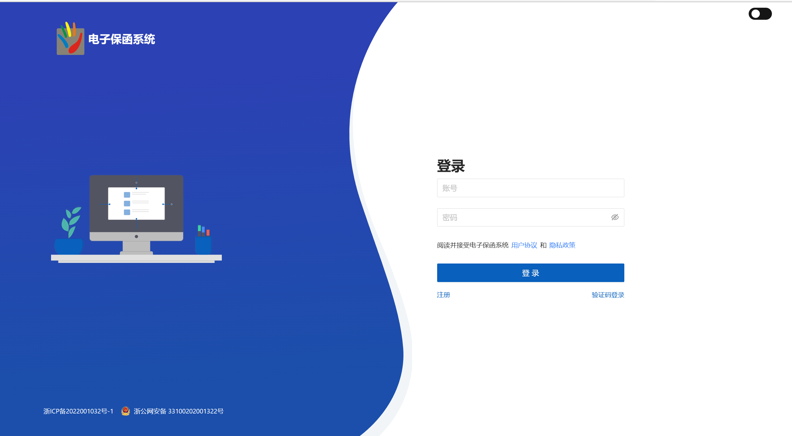
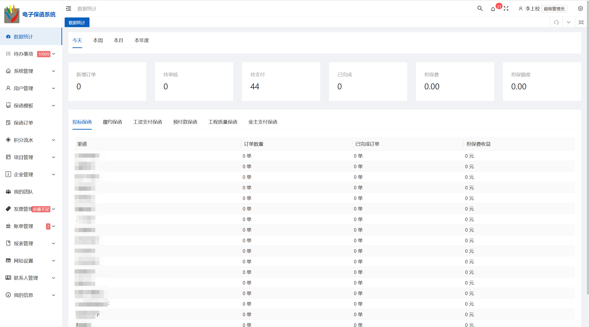

shangxiao.github.io
软件工程师 - 李上校
个人项目
电子保函系统-官网
官网地址：https://www.zjsxrz.com/#/index
 

项目描述：该官网是面向于客户群体，客户先通过手机号码登入或者短信方式登入后可在该官网上进行企业审核，审核通过后，在官网挑选项目进行下单，支付，退款，以及对订单完成之后的发票查看保函查看等，客户下单完成后实时推送手机短信信息并有连接来查看相关保函文件 ，该系统支持多种支付银行对公转账，支付宝支付，微信支付等方式。系统官网拥有工程项目模块，新闻资讯模块，合作伙伴模块，项目管理模块，下单模块，保函查验等。工程项目模块主要展示最近项目的主要信息，新闻资讯模块主要宣传近期金融类新闻的宣传，保函查验客户可输入保函编号进行查验保函的真伪等。
工作职责：
- 负责系统日常中出现的BUG等问题进行修复（如订单中出现数据异常，订单无法下单，金额不对等问题进行排查错误，按照排查错误的结果进行修复相关的问题等）。
- 根据系统日常使用的情况适当增加需求（增加第三方支付的功能包括微信支付，积分支付，完成合作公司的数据交互，下单时增加推荐人的选项功能，上传营业执照，下载全部文件，生成操作记录等功能）。
- 搭建测试环境电子保函系统，根据系统的并发量，使用情况，等各个因素购买相对配置的阿里云服务器（云服务器ECS），申请SSL证书，在服务器Linux系统中部署Docker容器，在Docker容器中部署Mysql，MongoDB,Redis再部署Nginx等。
电子保函系统-后台
后台地址：https://sxadmin.zjsxrz.com/#/login
 项目描述：该后台是面向于企业人员，管理员可对不同企业人员赋予不同管理权限，其中包含订单模块，项目管理，项目模板，公司管理，发票管理，银行账单，业绩报表等，其中订单模块主要作用管理系统官网下单的订单和第三方合作公司的订单的数据，管理者可在订单模块操作订单的支付，退款，下单以及批量下单等操作。报表管理主要统计某个时间段内的营业额，出入账等数据，并导出excel表格，账单模块主要管理银行返回过来的转账数据，以及微信支付的数据，待办模块主要用于管理官网客户申请的企业进行审核与处理，还有其中的黑名单。
工作职责：
- 与第三方公司合作交流，制定第三方接口，以及书写接口文档。和第三方技术人员沟通对第三方接口的对接，调试，联调，包括企查查，宁波银行，阿里云短信等接口。
- 根据系统日常使用的情况适当增加需求（增加业绩报表模块，单日数据量统计，操作记录等功能）。
- 负责系统日常中出现的BUG等问题进行修复（如银行接口中的数据异常问题，进行检测并于银行技术人员沟通处理）。
电子保函系统-小程序
小程序地址：

项目描述：该小程序主要模块包括订单查询，项目下单，订单支付，企业审核，账单管理，查询相关保函等模块。账单管理模块主要有我的账单，积分账单，推荐账单等模块组成，客户首次登录进行企业审核审核通过，挑选相关的项目进行下单支付，支付方式可分为微信支付，银行转账，积分支付。
工作职责：
- 负责第三方接口的接入（如：微信支付接口），小程序适配。
- 根据系统日常使用的情况适当增加需求（增加微信支付，扫码支付，我的账单，订单默认推荐码等功能）。
- 负责系统日常中出现的BUG等问题进行修复（如手机小程序无法打开问题，客户下单一笔订单系统出现二笔订单等问题）。
个人信息
姓名：李上校
年龄：24
学历：本科
邮箱：915766253@qq.com
GitHub: https://github.com/jeremyxixi
技术栈
- 熟练使用 HTML、CSS 和 TypeScript 构建高性能 Web 应用程序，了解 Web Components 规范。
- 熟练使用 Vue3 能使用Vue3独立进行项目的开发。
- 熟练使用 Go 能使用Go独立进行项目的开发。
- 熟练使用Mysql数据库,MongoDB数据库,Redis。
- 熟练使用 Element-Plus,Ant Design, Echarts框架开发项目 ，熟悉微信小程序，Uniapp。
- 熟悉使用git进行版本管理，掌握基本的git命令。熟悉webpack配置以及打包过程。
- 熟悉使用Linux系统,Docker,Nginx对服务器进行部署。
教育经历
- 数据科学与大数据技术 | 统招全日制本科
工作经历
台州乐一软件有限公司
前端开发实习生
2022 年 02 月 - 2022 年 08 月
项目职责：
- 根据UI图进行页面的开发；与后端团队密切配合，按期推进项目的进度；
- 参与各种界面的样式编写以及接口的对接，对复杂数据的处理，严格按照公司的代码规范；
浙江金电保数字有限公司
软件工程师
2022 年 09 月 - 至今
项目职责：
- 参与金电保后台管理系统的开发，维护尚信保函系统，小程序；
- 经理和使用者提供的需求，并完成相应的需求；
- 项目开发后主要功能的简单调试，和自己解决网页出现的问题；